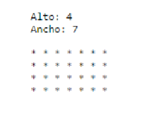
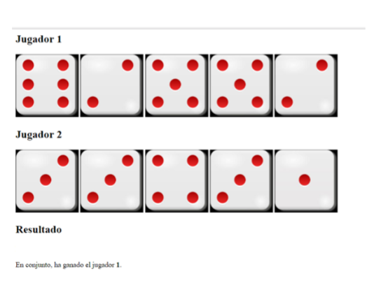
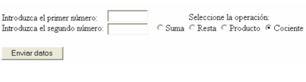

| Ejercicio | Descripción | Recurso si lo hubiera |
|---|---|---|
| Actividad1 ejercicio1 | Realizar un programa PHP que generé 2 números aleatorios (entre 5 y 15) y me dibujé un rectángulo de asteriscos como se puesta en la figura: |
 |
| Actividad1 ejercicio2 | El objetivo de este ejercicio es crear un programa en PHP que simule un juego de dados para dos jugadores. En lugar de un dado, cada jugador lanzará 5 dados y se almacenarán los resultados en dos matrices. Después de cada tirada, el programa determinará quién gana según las reglas del juego y mostrará el resultado Lanzamiento de Dados: Cada jugador lanzará 5 dados. Puedes usar la función rand() para simular el lanzamiento de un dado de seis caras (valores entre 1 y 6). Almacena los resultados de los dos jugadores en dos vectores, una para cada jugador. Determinación del Ganador: Después de cada tirada, compara los resultados de ambos jugadores. Suma los valores obtenidos en los 5 dados de cada jugador. El jugador con la suma total más alta gana la ronda. Si ambos jugadores tienen la misma suma total, la ronda se considera un empate. Mostrar Resultados: Después de cada ronda, muestra el resultado de esa ronda, indicando quién ganó o si hubo un empate. Lleva un registro de las rondas ganadas por cada jugador a lo largo del juego. Utiliza funciones en PHP para estructurar tu código y hacerlo más legible. Proporciona una salida clara que indique los resultados de cada ronda y el progreso del juego. |
 |
| Actividad1 ejercicio3 | Realizar una página web llamada operaciones.php que contenga un formulario con dos cuadros de texto y cuatro botones de radio según el siguiente esquema: Al pulsar sobre el botón “Enviar datos”, cargará la página datos_operaciones.php que recibirá los números enteros introducidos en el formulario y la operación a realizar con ellos como parámetros, y mostrará el resultado de realizar la operación seleccionada sobre los dos valores introducidos. Por ejemplo, si se introdujo en los cuadros de texto del formulario el número 12 y el número 6, y se seleccionó la operación Cociente, al pulsar el botón Enviar datos, la página php que carga mostrará: “El resultado de realizar el cociente de los números 12 y 6 es 2”. |
 |
| Ejercicio | Descripción | Recurso si lo hubiera |
|---|---|---|
| Tema 2.1 Ejercicio 1 | ... | |
| Tema 2.1 Ejercicio 2 | ... | |
| Tema 2.1 Ejercicio 3 | ... | |
| Tema 2.1 Ejercicio 4 | ... | |
| Tema 2.1 Ejercicio 5 | ... | |
| Tema 2.1 Ejercicio 6 | ... | |
| Tema 2.2 Ejercicio 1 | ... | |
| Tema 2.2 Ejercicio 2 | ... | |
| Tema 2.2 Ejercicio 3 | ... | |
| Tema 2.2 Ejercicio 4 | ... | |
| Tema 3.1 Ejercicio 1 | ... | |
| Tema 3.1 Ejercicio 2 | ... | |
| Tema 3.1 Ejercicio 3 | ... | |
| Tema 3.2 Ejercicio 1 | ... |